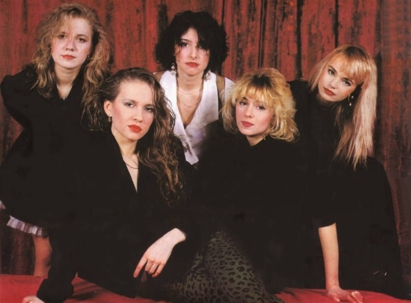

Ой,Серёга!

Песня "Ой, Серёга" группы "Комбинация" — это один из самых популярных и запоминающихся хитов 90-х годов в СССР. Вот несколько забавных фактов об этой культовой песне:
1. Гимн девичьих переживаний: "Ой, Серёга" стала символом для многих девушек того времени. Песня рассказывает о том, как главная героиня беспокоится, что её парень (Серёга) вернется к своей бывшей девушке. Несмотря на лёгкую и шуточную подачу, многие девушки находили себя в этой истории.
2. Универсальный Серёга: Серёга — одно из самых распространённых имён в странах бывшего СНГ, и это сделало песню очень узнаваемой для большинства слушателей. Почти у каждого в окружении был хотя бы один знакомый с этим именем, что сделало песню ещё более персональной и близкой.
3. Заразительный мотив: Песня настолько легко запоминается, что люди, даже если не знали её с начала, всё равно быстро начинали подпевать на припеве. Это стало настоящим феноменом на вечеринках и дискотеках в 90-х.
4. Элемент юмора: В песне юмор сыграл важную роль. Простой, но одновременно ироничный текст вместе с мелодией сделали "Ой, Серёга" весёлой и запоминающейся. Это один из тех хитов, которые воспринимаются как шуточная история, но при этом остаются в сердцах слушателей.
5. Комбинация хитовых имён: Интересно, что у группы "Комбинация" есть ещё одна знаменитая песня с мужским именем в заголовке — "Бухгалтер". Получается, у них была целая традиция в написании песен про популярных персонажей или типажи того времени.
6. Ностальгия по 90-м: Даже спустя десятилетия, песня "Ой, Серёга" остаётся популярной на ретро-вечеринках, как напоминание о простоте и юморе 90-х, когда такие песни легко становились народными хитами.
1 куплет:
Я влюбилась в мальчика
В красивого, высокого
Поманил он пальчиком
И взглядом одинокого
Я ему поверила
Улетел он соколом
Ну а мне досталась вот
Ой, судьба жестокая
Связка:
Ну а мне досталась вот
Ой, судьба жестокая
Припев:
Ой, Серёга, Серёга
Ты не стой у порога
Ты не стой у порога
Я теперь не твоя
Мы расстались до срока
Я теперь одинока
Ой, Серёга, Серёга
Я теперь не твоя!
Куплет 2:
Все подруги замужем
А я всё одинокая
Жду я ненаглядного
Красивого, высокого
Сердце беспокойное
Я ему доверила
Улетел он соколом
А я ему так верила
Связка:
Улетел он соколом
А я ему так верила
Припев:
Ой, Серёга, Серёга
Ты не стой у порога
Ты не стой у порога
Я теперь не твоя
Мы расстались до срока
Я теперь одинока
Ой, Серёга, Серёга
Я теперь не твоя
Ой, Серёга, Серёга
Ты не стой у порога
Ты не стой у порога
Я теперь не твоя
Мы расстались до срока
Я теперь одинока
Ой, Серёга, Серёга
Я теперь не твоя